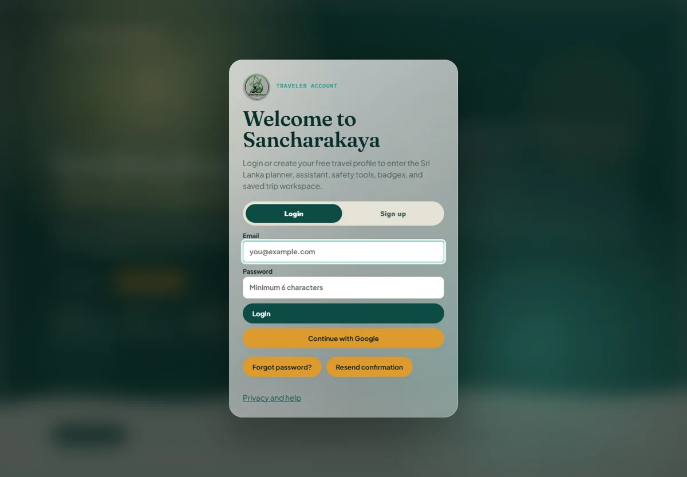

02 / Travel technology · Sri Lanka
Sancharakaya.
A Sri Lanka travel companion connecting personalized itineraries, local context, and AI assistance.
- Status
- Live application · Account required
- Context
- Smart tourism · August 2026 onward
- Technology
- JavaScript · Gemini · Supabase · HTML / CSS

01 / OVERVIEW
The problem
Planning a trip involves more than choosing destinations. Visitors also need local price context, safety information, and routes that fit their interests and travel pace.
The approach
Sancharakaya brings itinerary planning, a Gemini travel assistant, price guidance, and sustainable travel recommendations into one interface. The application also presents an account workspace for saved trips and preferences.
My contribution
Developed the tourism platform, combining trip planning, travel assistance, and user-facing tools, as documented in my public project entry.
02 / SYSTEM FLOW
How it connects
- 01Traveler preferences
- 02Itinerary + local context
- 03Gemini assistance
- 04Saved travel workspace
A simplified overview of the implementation.
03 / ENGINEERING
Inside the implementation
- Itinerary planning around dates, budget, interests, and pace.
- A virtual assistant for travel questions and changing plans.
- Fair-price guidance, safety awareness, and responsible travel options.
- Traveler accounts, saved trips, and preferences.
The engineering consideration
The product brings several kinds of travel information into a coherent planning flow. Personalized suggestions need to remain understandable alongside practical details such as budget, transport, and local context.
04 / SCOPE & STATUS
What this work demonstrates
The public app and its account interface were reviewed. Signed-in workflows and AI responses were not independently tested. The repository linked from LinkedIn is currently unavailable publicly, so it is not offered as a source-code destination.